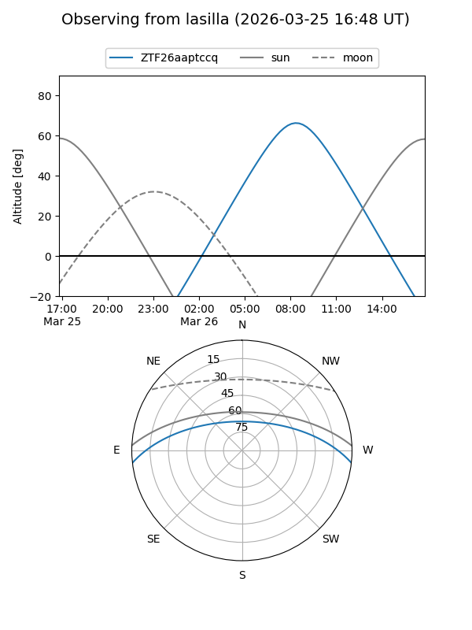
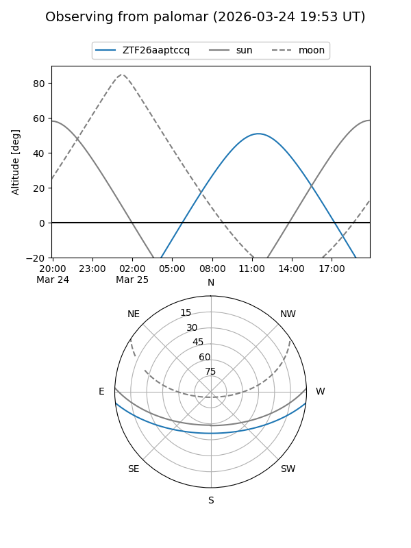

ZTF26aaptccq
Target ZTF26aaptccq at 2026-03-25 11:54
Aliases and brokers:
FINK: link
Lasair: link
ALeRCE: link
alt names
ZTF26aaptccq (ztf,fink_ztf)
Coordinates:
equatorial (ra, dec) = 238.2138,-5.52486
equatorial (HMS+DMS) = 15:52:51.31,-05:31:29.49
galactic (l, b) = (3.1893,+35.35261)
Flags:
Photometry:
last ztfg=18.86
1 ztfg detections
Lightcurve
Visibility


Additional plots